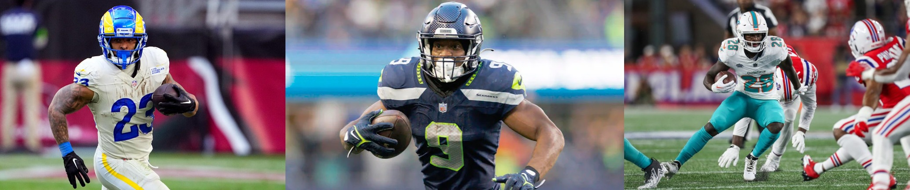

Breaking Down the Trenches: How Offensive Lines Drive NFL Rushing Success
By Rohan Baxi | January 01, 2025

In the NFL, much of a running back's success can be attributed not only to their individual talent but also to the effectiveness of their offensive line. The ability of an offensive line to consistently win blocks directly impacts the space a running back has to operate, dictating how well they can navigate defenses and gain yards. By analyzing key metrics like Run Block Win Rate (RBWR) and Yards Before Contact per Attempt (YBC/Att), we can examine the relation between line performance and running back efficiency.

Success Rate vs. Team Run Block Win Rate
The first scatterplot, comparing Success Rate (a measure of positive yardage gains by a running back) to Run Block Win Rate, offers insights into the variability of success rates despite similar levels of blocking effectiveness.
- Clusters in RBWR but Wide Range in Success Rates: Most NFL teams' offensive lines cluster in a relatively narrow band between 68% and 74% RBWR. However, running back success rates vary widely, from around 38% to 62%. This variation suggests that even with similar levels of line performance, the ability of running backs to achieve consistent yardage gains differs significantly. This discrepancy may reflect running backs' vision, speed, or agility differences.
- Top Performers and Low Performers:
- Brian Robinson Jr.'s' team boasts the highest RBWR, with the Commanders at 76%, an indicator of exceptional line performance. However, Robinson’s success rate is in the middle of the pack, which could point to other factors affecting his effectiveness, such as defensive matchups or play-calling.
- Aaron Jones led the NFL in 2023 in success rate at 62%, showing his individual ability to convert blocks into positive gains. This high success rate demonstrates Jones’s skill in making the most of his line’s support, showcasing his efficiency as a runner.
- Struggling Offenses:
Josh Jacobs and Zamir White's Raiders, with an RBWR of just 64%, suffer from the least effective run-blocking lines. The low success rates of these backs reflect the challenges they face behind an underperforming line, where gaps are less frequent and defenders are more often in their face.

Running Back Efficiency vs. Team Run Blocking
The second scatterplot examines Yards Before Contact per Attempt (YBC/Att), a key measure of the back's space before initial contact, against RBWR. This metric highlights how well lines can create initial running lanes and the extent to which backs can take advantage of those lanes.
- Outliers in Efficiency:
- De'Von Achane stands out with a remarkable YBC/Att of 4.7, the highest in the league. While not the absolute best in RBWR, his team's offensive line still provides him with substantial space to operate. This high YBC/Att could also be a testament to Achane's speed and vision, showcasing a blistering 4.32 40 time in the 2023 NFL Draft, allowing him to maximize each opportunity before contact.
- Cluster of Moderate Efficiency Backs: Many running backs fall within the 2.0-3.0 YBC/Att range, clustered around a team RBWR of 71%. This clustering suggests that while some offensive lines provide adequate blocking, the backs in this range may lack the explosive playmaking ability to generate significant yards before contact consistently.
- Challenges for Low YBC/Att Backs:
- Kenneth Walker and Javonte Williams record some of the lowest YBC/Att values, indicating they face contact sooner than most other backs. Despite their lines' efforts, their offensive schemes or the line’s execution might limit the space they have to maneuver. Achieving high efficiency is more challenging for these backs, as they’re often forced to make defenders miss early in the play.
Key Takeaways
This analysis underscores the importance of offensive line performance in dictating the success and efficiency of NFL running backs. While individual talent plays a significant role, a team's blocking effectiveness provides the foundation for a back's ability to thrive.
- High RBWR Does Not Guarantee High Success Rates: While a strong offensive line can create opportunities, success rate also hinges on the running back's ability to exploit those blocks effectively. This is evident from players like Brian Robinson Jr., whose high RBWR does not translate to the highest success rate.
- Explosive Backs Make the Most of Limited Space: Players like De'Von Achane show how elite speed and vision can amplify the impact of effective blocking, transforming modest RBWR into significant yardage gains.
- Challenges for Backs with Low RBWR: Players on teams with low RBWR, like Josh Jacobs, face an uphill battle. Without consistent blocking, they are forced to rely on individual playmaking, which may limit their success over the season.
In conclusion, the offensive line is the unsung hero behind every great running back, paving the way for their success. A cohesive line with a high RBWR can elevate a running back's performance, though individual skill remains crucial. Teams with a blend of strong blocking and talented backs, like Aaron Jones and De'Von Achane, showcase the ideal formula for rushing success. For other teams, improving line play could be the key to unlocking their running backs’ full potential.